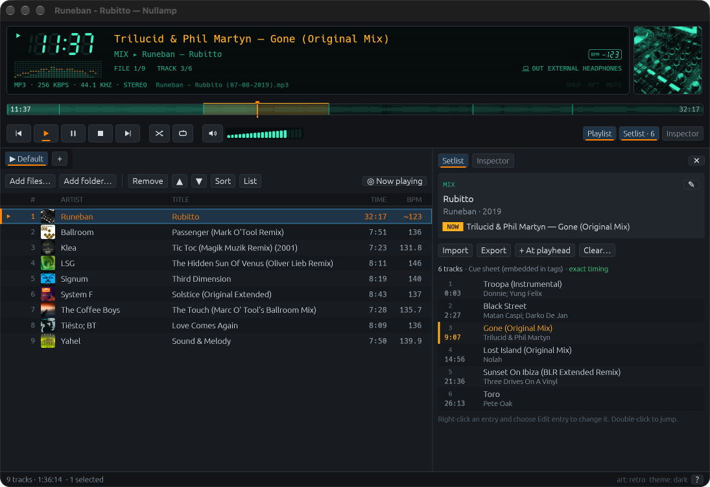
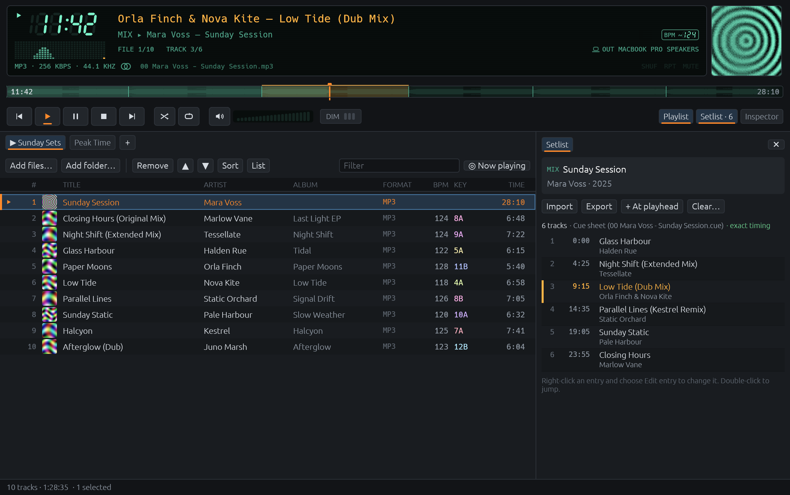
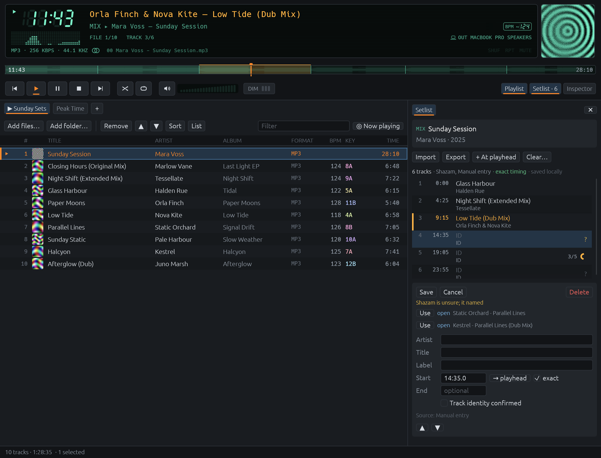
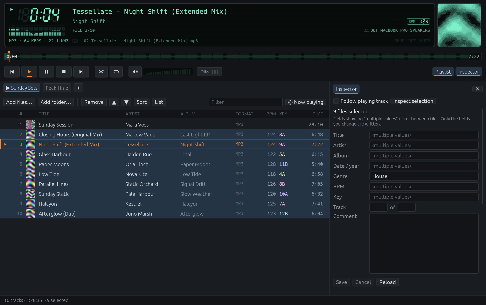
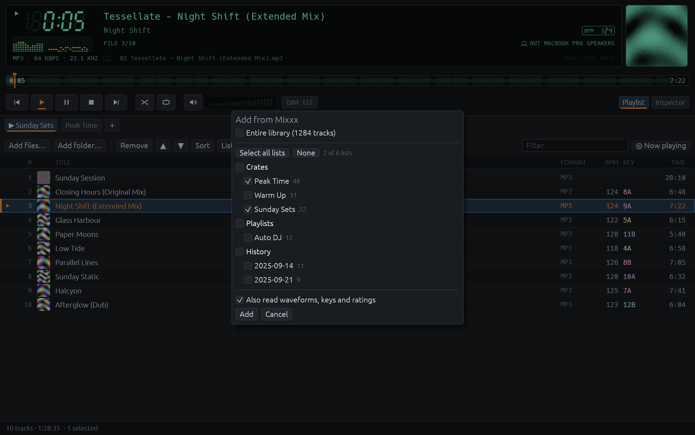

Instant response
A warm file is audible in about 40 ms. Seeks land in a few milliseconds and opening files never blocks the window.
Nullamp is a fast, retro-inspired player for the music on your disk. It opens files in milliseconds, plays gapless, and shows the current track of a one-hour DJ mix.
Download for macOS View on GitHub
Free and open source. Apple silicon. Written in Rust.

Most players treat a two-hour mix as one big track. Nullamp reads the track list that comes with it and follows along, so you can see what you are hearing, jump to the next track, and fix the list when it is wrong. It is not a streaming client and not a library manager. It plays your files and never moves or renames them.
DJ mixes
A mix is one file with a setlist. Nullamp finds it in a cue sheet beside the file, in ID3 chapters, in a cue sheet inside the tags, or in a plain track list in the comment.

Click the timeline. The title follows the track under the playhead, as it does in the app.
When there is no tracklist
Got a mix of your own with no list anywhere? Nullamp can work out from the audio where the tracks change, then help you name them.

The player
A warm file is audible in about 40 ms. Seeks land in a few milliseconds and opening files never blocks the window.
Gapless playback, shuffle, repeat, and volume ramps without clicks. It recovers when headphones, Bluetooth or sleep change the output.
Elapsed or remaining time, a spectrum or oscilloscope aligned to what you actually hear, and a tempo readout for the track inside the mix.
See breaks, builds and drops before you get there. For a mix the timeline is cut into one segment per track.
A fast table with artwork, drag to reorder, sorting by key on the Camelot wheel, and columns you can hide and rearrange.
Hardware keys and the macOS Now Playing widget work from the background, and show the track inside the mix.
While a mix plays, the artwork follows the track, found once by artist and title and cached. Or switch it off.
Follow the system or pick one. The LCD stays dark either way.
Metadata
The inspector shows tags, technical details, chapters and artwork for the playing track, and edits up to 500 files at once.

DJ software
Add playlists straight from a rekordbox USB stick or from Mixxx, and use what those programs already know about your tracks.

Nullamp has no account, no telemetry and no streaming. Three things use the network, and each is visible and can be left alone: the update check when you press the button, the cover lookup for the track playing inside a mix (switch it off with one setting), and Identify with Shazam when you ask for it.
Download the latest build, unzip, and drag Nullamp.app to Applications.
Download the latest release Read the user manual
Prefer to build it yourself? You need Rust 1.88 or newer, then cargo run --release.
No. Nullamp never scans, moves or renames your folders on its own. You add files and folders, and it plays them.
MP3, AAC and M4A, ALAC, FLAC, Ogg Vorbis, WAV and AIFF.
Constant bit rate files, which covers most DJ mixes, seek exactly. Seeking far into a variable bit rate MP3 without a seek table is approximate.
No. It shows keys from your tags, rekordbox or Mixxx, coloured by their place on the Camelot wheel.
Rust, with an egui interface. The licence is MIT or Apache-2.0, at your option.